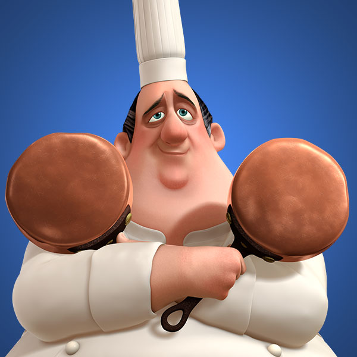

Gusteau's had a radiacal belief: Anyone can cook. Located at 15 Quai de la Tournelle, our restaurant opened its doors during the 1950s to authentic French cuisine to everyone.
Our founder, Gusteau, assembled a team of passionate, like-minded chefs with broad talents, from chefs who were trained in the finest culinary traditions of France to chefs of unknown origins. From the very first night, the aroma of a new French cuisine filled the cobblestone street outside.
Over the years, Gusteau's earned a reputation not only for its Ratatouille, but for the nostalgia of mother's home cooking in every plate. We believe the kitchen is a place of creativity, courage, and connection.
Today, our menu celebrates the diversity of French cuisine and culture: from the rustic comfort food of traditional France to the delicate artistry of new-age cuisine. Every ingredient is sourced from local markets and trusted French producers who share our commitment to quality.
Join us for a quiet dinner for two, a family celebration, or to experience French cuisine made homely for you from chefs from all walks of life.
"Anyone can cook!"